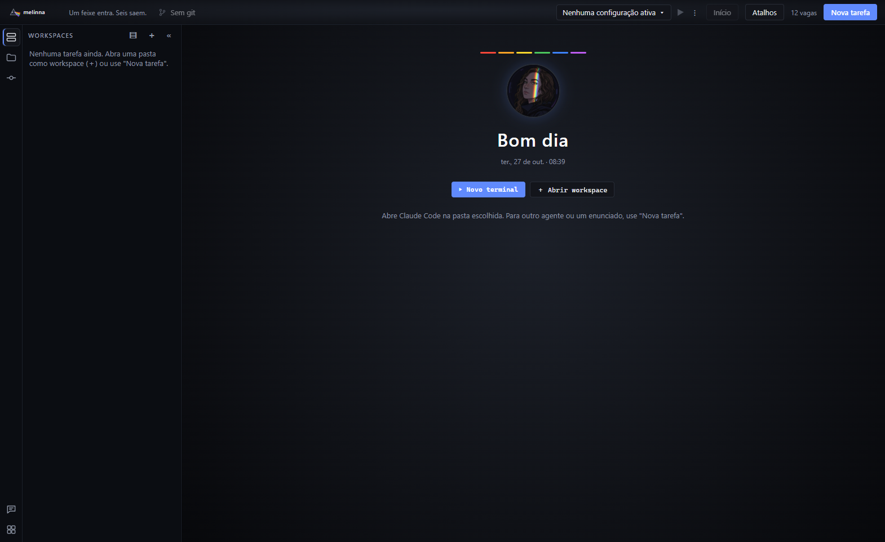
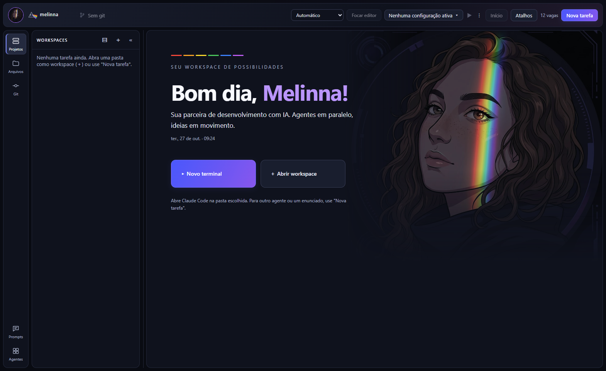
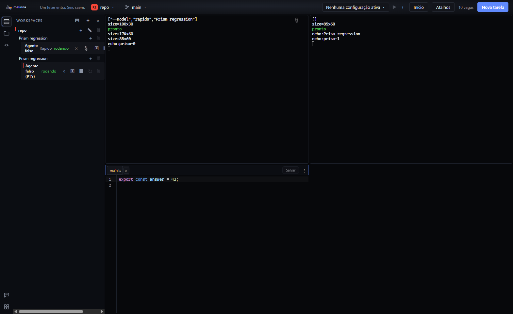
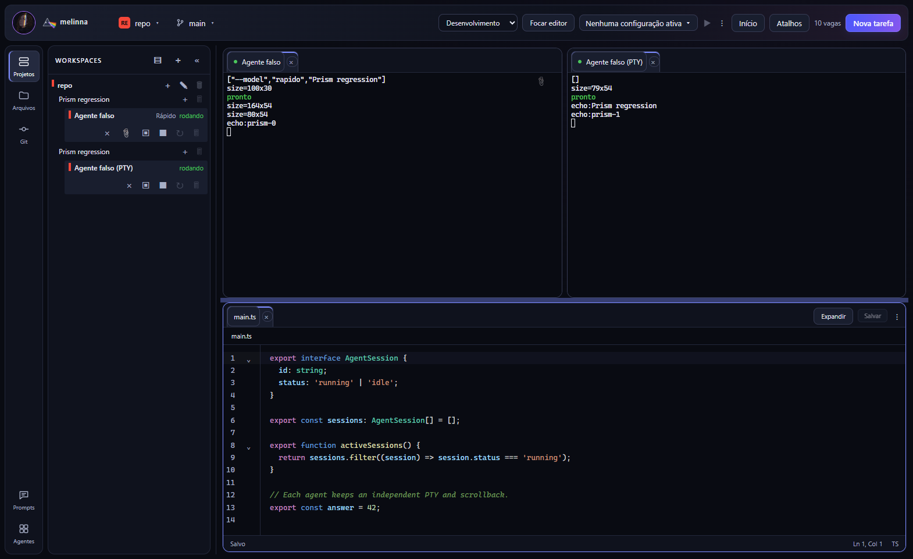

Capturas reais do Electron com perfis e agentes de teste. Os estados comparam Home e coexistência de terminais/editor. As capturas de desenvolvimento usam arquivos de fixture com conteúdo diferente; compare a distribuição e a ergonomia, não as linhas de código.




Explorador · Editor em Foco · Editor dividido · Home com recentes · 1366×768 · Zoom de 125% · Confirmação